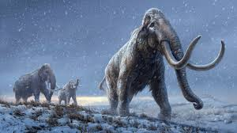
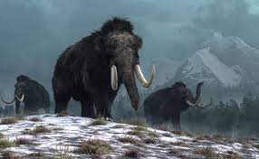
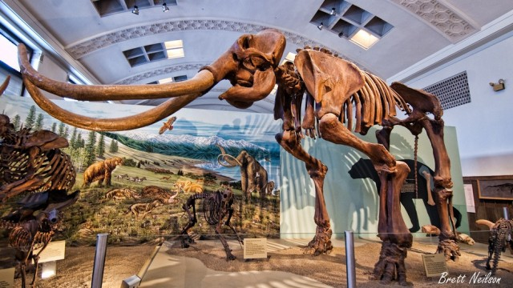

INFORMATION
Wooly Mammoths lived in the tundras of Europe, Asia, and North America. The tundras lived in a steppe tundra habitat, which is a habitat that had low grasses, shrubs, and sedges.They lived during a time where the Earth was experiencing a ice age. The last known group of Wooly Mammoths lived until 1650 B.C.
Wooly Mammoths were herbviores. They are grazers which means that they eat food they find on the ground. Their diet maily consisted of plants, mainly grasses and sedges. If they didn't see those plants around them, they would instead eat plants such as flowering plants, herbaceous plants, mosses, tree matter, and shrubs.
  Wooly mammoths coexisted with humans. Humans used Wooly Mammoth bones and tusks in art, tools, and dwellings. They also also hunted mammoths and ate them for food. A mammoth would feed 400 people for several weeks.
Wooly Mammoths went extinct due to climate change and over-predation. Climate change caused their food supply to drop and decrease. The warming of the climate also caused the Mammoth to go extinct because they couldn't adapt.
Wooly Mammoth fossils have been found all over the world. The youngest Mammoth fossil found dates to an estimated 3.500 years ago. It was found on Wrangel Island north of Siberia. The fossils of Mammoths found were mostly males. This suggests that male Mammoths traveled alone without female leadership.